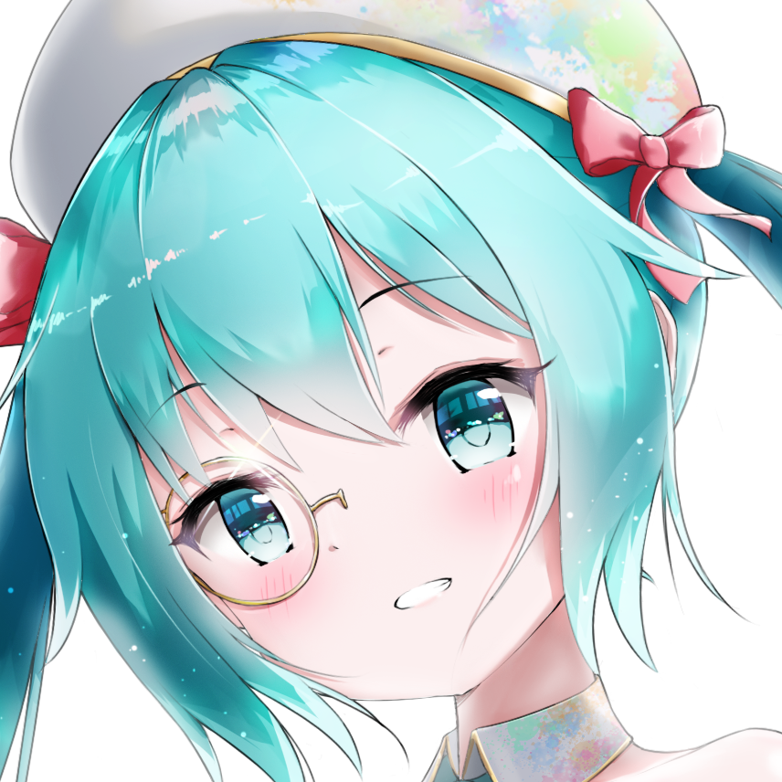

PROFILE
RANHI
The world is my school; nature and human life are my textbooks.

Hello! I'm RANHI (岚曦), based in Tokyo. I mainly draw Vocaloid and anime characters, especially Hatsune Miku. Japanese digital illustration from the 2010s has been a major influence on my work, and I've always loved its fresh colours and sense of clarity.
I want to develop my own way of drawing Miku and express my feelings through art. If a picture I share online reaches someone, somewhere in the world, and moves them, that alone makes me happy.
formerly RemeaMiku
Vocaloid / Fan art
My journey into drawing
-
It started with a drawing I loved
In 2016, not long after becoming a Hatsune Miku fan, I discovered the work of Kyod+, now known as あさひクロイ and often called 旭酱 by Chinese fans. The artist's Miku illustrations were adorable and full of life, with beautifully clear colours. Many still stop me in my tracks today. That was when I picked up a pencil and began making studies of those drawings.
-
From pencil to digital
I bought a drawing tablet and began learning Photoshop. During university, I gradually moved from studies to composing my own pictures. I also displayed my work at Wuhan University's anime club booth and made promotional flyers.
-
Reaching more people
After graduating and starting work, I made time to draw a MAGICAL MIRAI 2024 illustration. It was later featured by the official Hatsune Miku / piapro account. I was thrilled—it was the first time I really felt my work was reaching further out into the world.
-
A new chapter in Tokyo
I moved to Tokyo on my own to live and work, hoping to attend more Miku and anime events. The creative atmosphere, city streets, and natural scenery around me offered plenty of inspiration, but my job still left little time or energy for drawing.
-
Making time for drawing
In April, I left my job to focus on practice and study drawing more systematically. I made more pieces in the next six months than in the previous four years combined, and could finally see a real difference in my work.
The artist who inspired me saw my work
Recently, あさひクロイ followed me on Pixiv. Going from picking up a pencil because of this artist's work to having my own drawings seen in return was one of the most memorable moments of my creative life. I still love the style that first moved me, and I want to carry that love forward as I slowly tell stories of my own.